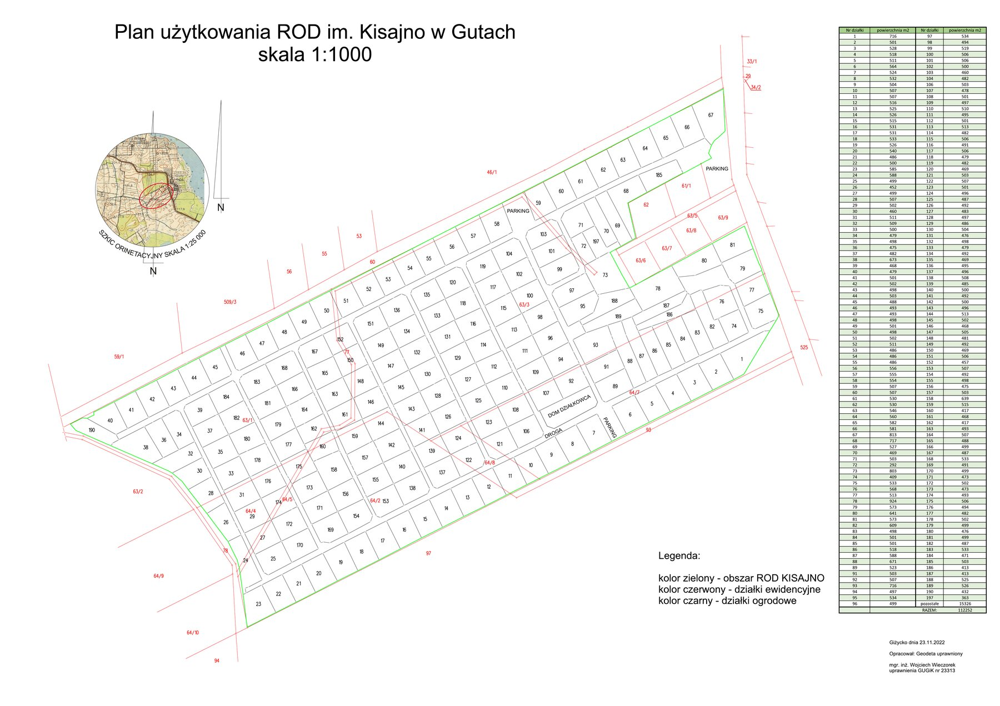

Plan użytkowania ROD im. Kisajno w Gutach, skala 1:1000. Zawiera numerację (do nr 197) i powierzchnię 189 działek ogrodowych.

Opracował: geodeta uprawniony mgr inż. Wojciech Wieczorek, GUGiK nr 23313 — Giżycko, 23.11.2022 r. Zielony kontur oznacza granicę ROD Kisajno, czerwony — działki ewidencyjne, czarny — działki ogrodowe.